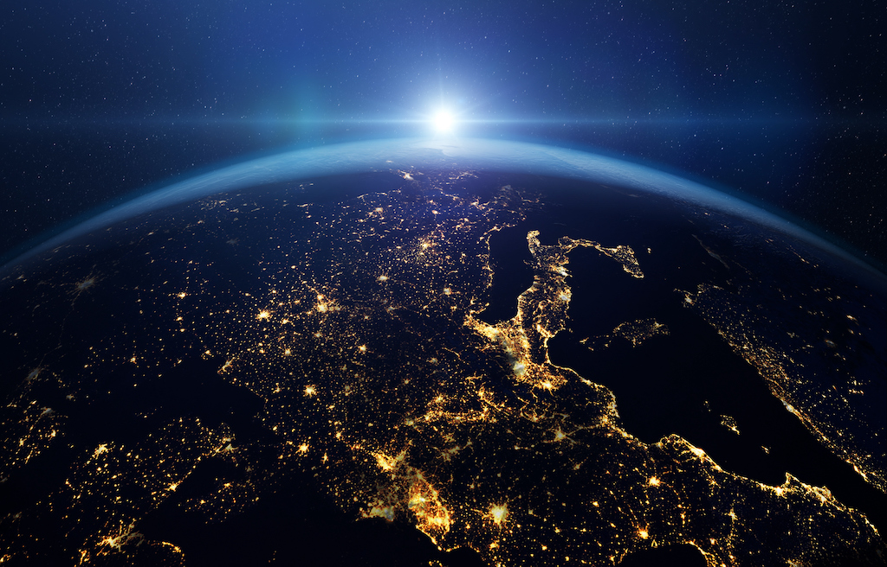

La destruccion de la atmosfera.
La atmósfera terrestre es una capa crucial de gases que rodea nuestro planeta, esencial para la vida tal como la conocemos. Proporciona el oxígeno necesario para la respiración, regula la temperatura global al absorber y distribuir el calor solar, y protege a la Tierra de la radiación ultravioleta dañina. Sin embargo, la intervención humana ha comenzado a deteriorar esta capa vital, poniendo en riesgo la estabilidad de nuestro entorno.
Hay distintas causas para la destruccion de la atmosfera terrestre, y estas son algunas:
- Emisiones de gases contaminantes: La quema de combustibles fósiles, como el carbón y el petróleo, libera dióxido de carbono (CO2) y otros gases contaminantes.
- Deforestación: La tala de bosques reduce la cantidad de árboles que absorben CO2, exacerbando el problema.
- Uso de productos químicos: Los productos químicos industriales y agrícolas pueden liberar compuestos que dañan la capa de ozono.
Aqui estan los efectos de la destruccion de la atmosfera:
- Cambio climático: El aumento de gases de efecto invernadero contribuye al calentamiento global.
- Desglaciación: El aumento de la temperatura global está causando el derretimiento de glaciares y el aumento del nivel del mar.
- Problemas de salud: La contaminación del aire puede causar enfermedades respiratorias y cardiovasculares.

¿Qué podemos hacer contra la destrucción de la atmósfera?
- Reducir el Uso de Combustibles Fósiles: Usa el transporte público, camina, o anda en bicicleta en lugar de conducir un automóvil. Considera el uso de vehículos eléctricos o híbridos.
- Ahorrar Energía: Apaga las luces y los electrodomésticos cuando no los estés usando. Opta por electrodomésticos energéticamente eficientes.
- Plantación de Árboles: Los árboles absorben dióxido de carbono, uno de los principales gases de efecto invernadero, y liberan oxígeno. Participa en campañas de reforestación.
- Reducir, Reutilizar y Reciclar: Minimiza tu producción de residuos. Reutiliza productos siempre que sea posible y recicla los materiales apropiados.
- Apoyar Energías Renovables: Considera instalar paneles solares en tu hogar o apoya políticas y empresas que promuevan la energía limpia como la solar y la eólica.
- Promover la Educación Ambiental: Infórmate y educa a otros sobre la importancia de proteger la atmósfera y cómo hacerlo de manera efectiva.
Al tomar estas medidas, podemos trabajar juntos para proteger la atmósfera y mitigar los efectos del cambio climático.